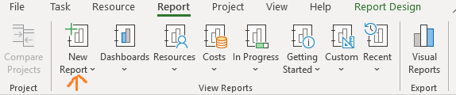
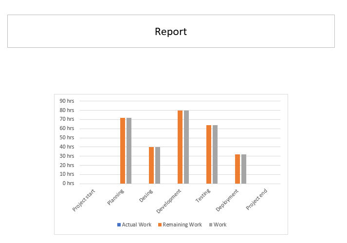

Diagrammide loomine
Diagrammid aitavad visualiseerida projekti andmeid. Kasutasin diagrammi, et näha ülesannete kestusi graafiliselt.
- Mine Report vahekaardile
- Vali New Report
- Lisa Chart
- Kohanda diagrammi andmeid


Diagrammid aitavad visualiseerida projekti andmeid.
Diagrammid aitavad visualiseerida projekti andmeid. Kasutasin diagrammi, et näha ülesannete kestusi graafiliselt.

